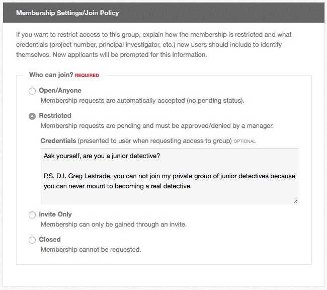

Hub users
Creating and deleting a group
Any signed-in user may create a group, unless the hub's administrators have taken the privilege away from your access group. Deleting one needs a group manager.
Creating a group
- Sign in and go to
/groups. - Select Create New Group.
- Fill in the form and select Save Group.
The form is one page, in these sections.
Group Details
| Field | What it is |
|---|---|
| Group ID | Required. The group's address: /groups/<Group ID>. Lowercase letters, digits and underscores only, no spaces, and not digits alone. A handful of names are reserved. It cannot be changed afterwards |
| Title | Required. The name people see |
| Interests (tags) | Optional. Comma-separated tags. They make the group findable by search and put it in front of members whose profile interests match |
Your hub may add fields of its own beneath these — the hub's administrators define them, and their answers are what the group's Overview tab shows under About the Group.
Membership Settings/Join Policy
Pick one, under Who can join?:
| Policy | Effect |
|---|---|
| Open/Anyone | Membership requests are automatically accepted |
| Restricted | Membership requests are pending and must be approved or denied by a manager |
| Invite Only | Membership can only be gained through an invite |
| Closed | Membership cannot be requested |
Credentials is an optional block of text shown to anyone requesting membership. Use it on a restricted group to say what an applicant should tell you — a project number, a principal investigator, and so on.

If the hub allows time-limited memberships, a Membership length section follows, where you set a default number of days after which new members are removed automatically. Leave it at 0 for memberships that never end. Changing it does not affect anyone who has already joined.
Privacy Settings
Discoverability is one of two values:
| Value | Effect |
|---|---|
| Visible | The group can be found in searches and by browsing groups |
| Hidden | The group cannot be found through searches and is only viewable by group members |
Access Permissions below it lists every tab available to groups on this hub. Set each one to Any HUB Visitor, Registered HUB Users, Group Members Only or Disabled/Off. Overview cannot be set to Disabled/Off. Anything already selected is the hub's default until you override it.
Group Email Settings
One checkbox, Auto subscribe new group users to discussion email. Tick it and new members start subscribed to the group's forum email; each of them can change it afterwards. See Group forum.
Page Settings
| Field | What it does |
|---|---|
| Comments | Whether group pages show comments: No, Yes, or Lock (existing comments stay, no new ones). Each page can override it |
| Author Details | Whether each group page ends with a line naming its creator, its last editor and the date |
After you save
The group is created, you become its first member and its first manager, and you land on the group's page.
Whether the group is visible to anyone else depends on the hub. Most hubs approve new groups automatically. If yours does not, the group is saved unapproved: only its managers, members and invitees can reach it, everyone else gets a "not found", and the group's page carries a warning until an administrator approves it. Nobody but a manager can open any tab other than Overview in the meantime.
Deleting a group
You must be a manager of the group. You do not have to be its only member — every member is notified, and you can write the message they get.
- Open the group.
- Open the Group Manager menu and select Delete Group.
- The confirmation page lists what will be lost: the number of members who will be notified, and a line from each of the group's plugins counting the blog entries, forum posts, wiki pages and other content that go with it.
- Type the group's Group ID in the confirmation box.
- Optionally edit the message sent to the members.
- Select Delete.
The confirmation page offers an alternative worth reading first: set the join policy to Closed and the discoverability to Hidden. The group then takes no new members and is invisible to everyone else, but it is still there if you want it later.
An administrator can also delete a group from the administrator interface; see Groups.
Rewritten and checked against 2.4-main @ 1924c22171 on 2026-09-09.